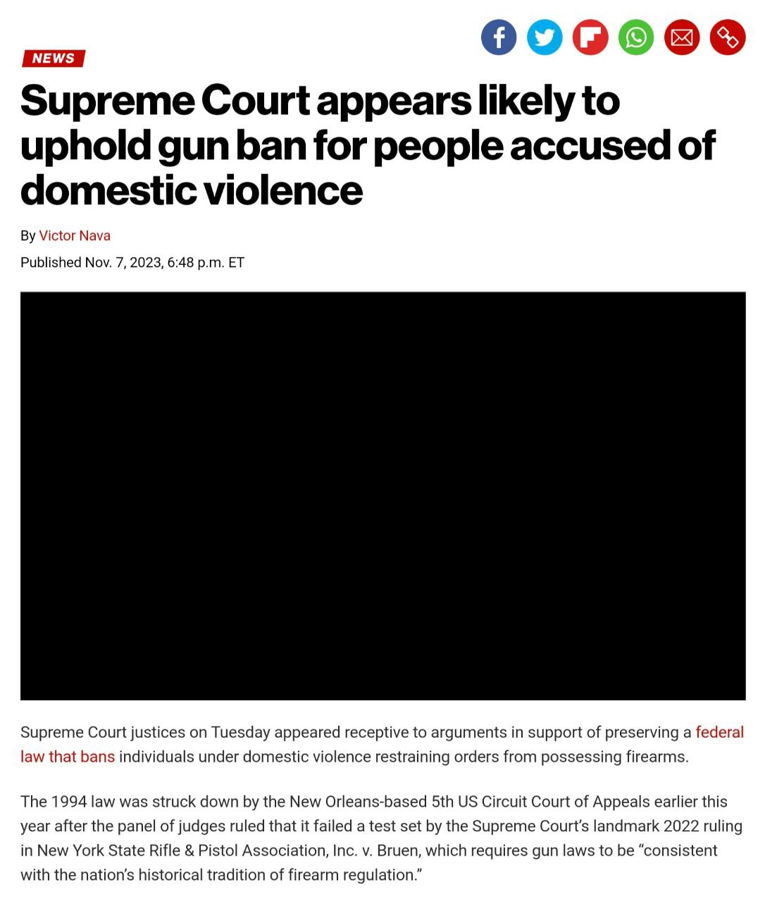
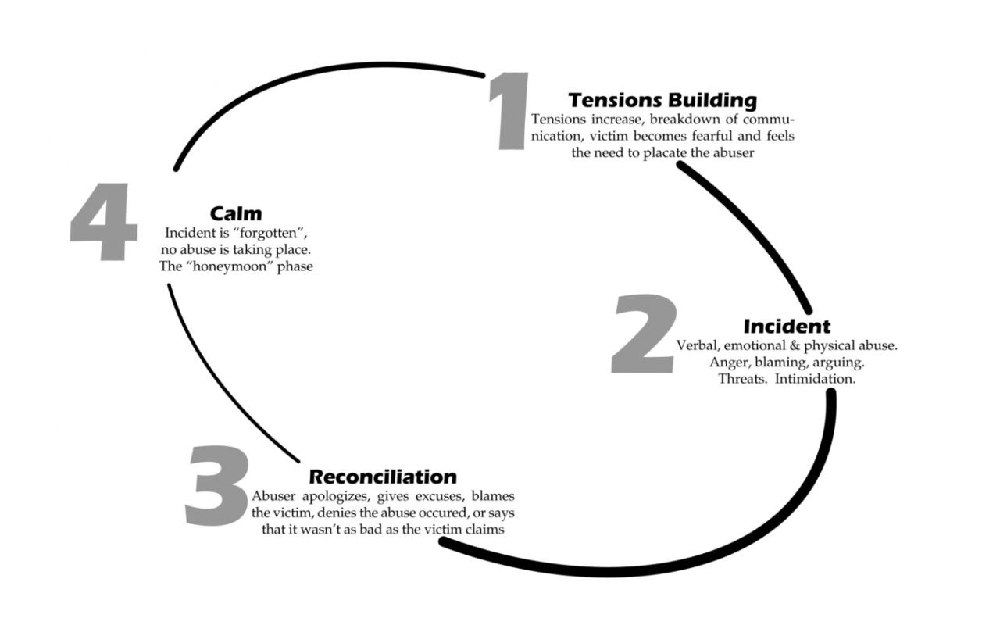

END DOMESTIC VIOLENCE

What is end domestic violence?
- Domestic violence is a pattern of violence, abuse, or intimidation used to control or maintain power over a partner who is or has been in an intimate relationship. Fundamentally, domestic violence is about power and control.
Cycle of Abuse

How To Overcome In My Point of View about Ending Domestic Violence
- Educate yourself. The first step to overcoming domestic violence is to learn as much as you can about it. This includes understanding the different types of abuse, the signs and symptoms of abuse, and the resources available to help victims. You can find information on domestic violence from a variety of sources, such as the National Domestic Violence Hotline, the National Coalition Against Domestic Violence, and the National Center for Victims of Crime
- Talk to someone you trust. Once you have a better understanding of domestic violence, it is important to talk to someone you trust about what is happening. This could be a friend, family member, therapist, or other professional. Talking about what you are going through can help you to process your emotions and develop a plan for getting help
- Seek help from a professional. A professional can help you to understand your options and develop a plan for getting safe. They can also provide support and counseling as you work through the healing process. There are a number of different types of professionals who can help victims of domestic violence, such as therapists, counselors, and social workers.
CONTACT ME

|
|